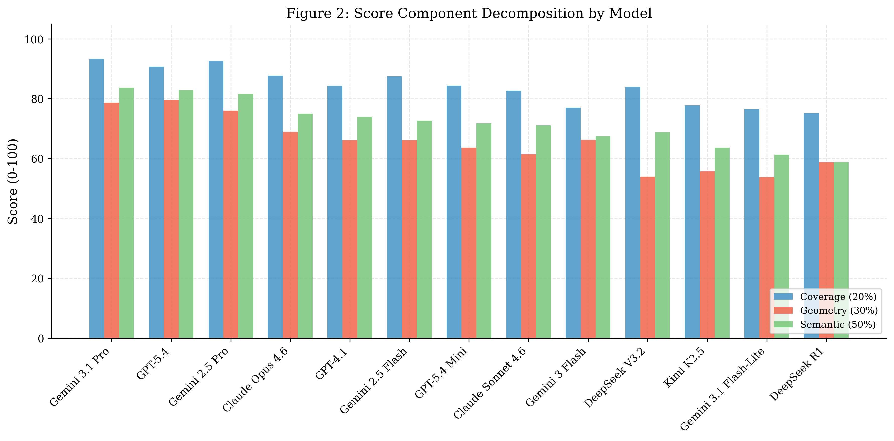
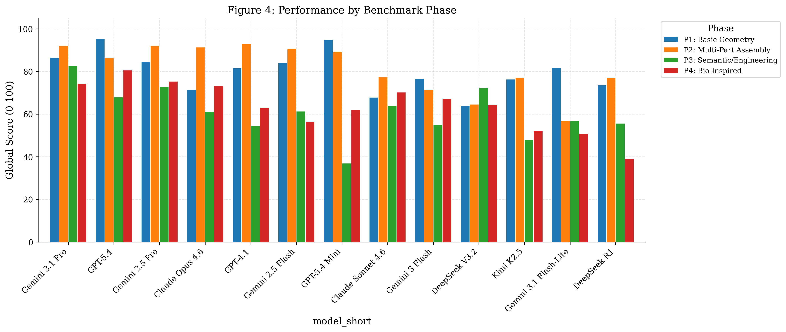
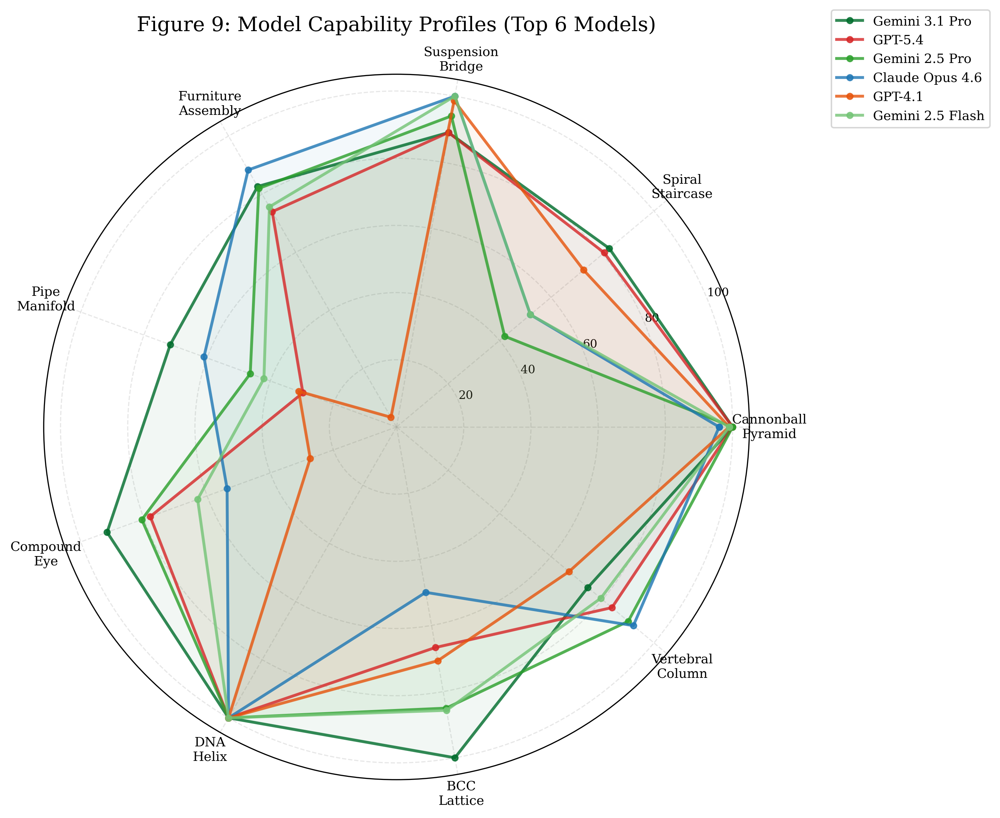
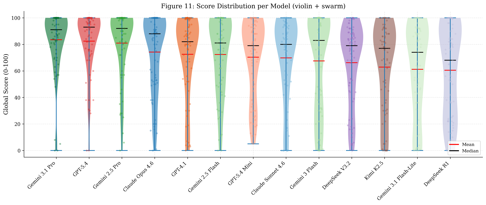
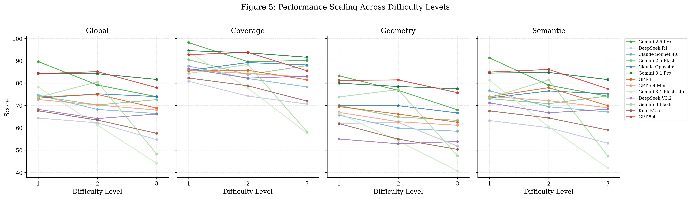
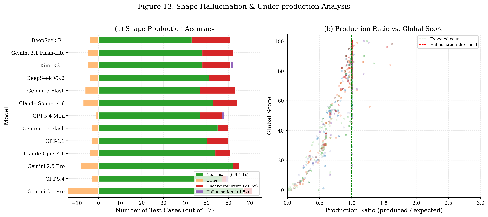
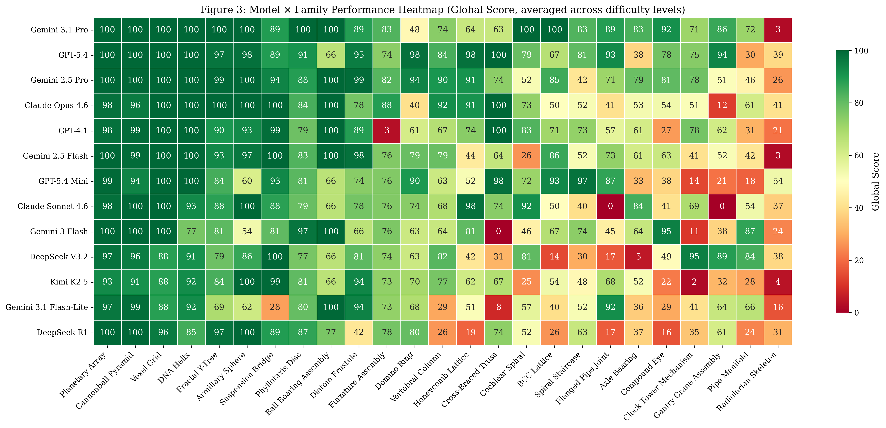
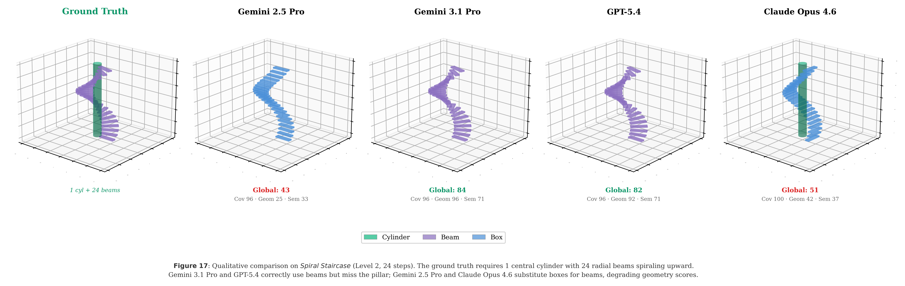

Figure 1: Comparative evaluation of 13 frontier Large Language Models across the C2CAD-Bench spectrum.
Abstract
AI-assisted CAD design relies on a prompt-to-code-to-CAD pipeline, where an LLM generates code for a CAD engine from a natural-language description. Existing benchmarks combine programming proficiency with spatial understanding; reaching a syntactically correct script that places every part at the wrong coordinate passes all execution-based checks. Moreover, image-based evaluation cannot inspect internal geometry such as lattice connectivity or clearance fits. We introduce C2CAD-BENCH, a benchmark that isolates 3D spatial reasoning from code-generation proficiency by removing the code layer entirely. Models receive a natural-language engineering specification and must produce a JSON array of geometric primitives, scored deterministically against parametric ground truth without code execution or rendering. Prompts follow a zero-scaffolding methodology that supplies only physical intent, requiring models to derive every coordinate from first principles. The benchmark comprises 25 test families across four phases of cognitive demand (75 test cases, up to 805 shapes), evaluated with a gated three-axis scoring pipeline (Coverage, Geometry, Semantic). Evaluation of 13 frontier LLMs from five providers reveals a persistent coverage–geometry gap of roughly 19 points, systematic primitive type confusion, and that constraint complexity rather than shape count drives difficulty.
Benchmark Objectives
Establishing a rigorous evaluation framework for LLM-based parametric CAD generation.
C2CAD-Bench evaluates the multi-step spatial reasoning capabilities of LLMs in generating deterministic CAD geometry. The benchmark requires models to map high-level engineering specifications to precise parametric primitives.
Geometric Constraints: Concentricity, patterns, and pathing.
Topological Validity: Connectivity and manifold verification.
Reasoning Depth: Multi-phase complexity from primitives to functional assemblies.

75 Test Cases
Covering 25 distinct test families across three complexity levels (Primitive, Structure, Assembly).
13 Frontier Models
Evaluating state-of-the-art models including Gemini, GPT-4, Claude 3.5, and DeepSeek.
Tri-Partite Scoring
Automated validation of Coverage (20%), Geometry (30%), and Semantic Validity (50%).
Benchmark Structure & Phases
Tracking model performance across dimensionality and constraint complexity.

Figure 2: Model performance distributions across the four benchmark phases, highlighting the transition from basic forms to engineering assemblies.
Spatial Reasoning Signatures

Radar profiles reveal the "spatial signature" of each model family, identifying distinctive reasoning biases and architectural strengths.
Performance Distributions

Statistical breakdown of score density across different model vendors, showing the stability and ceiling of current spatial models.
Scaling & Failure Modes
Understanding the limits of current topological and geometric production.
Difficulty Scaling

Tracking the degradation of coverage and semantic logic as tasks transition from single primitives to multi-part engineering systems.
Hallucination Profiles

Distinguishing between structural under-production and excessive "geometric hallucinations" during complex pathing tasks.

Figure 3: Global heatmap of global scores across all 25 test families, revealing specific failure modes in engineering scenarios.
Showcase Gallery
Visual examples of successful and failed parametric reconstructions.

Spiral Staircase (Phase 1)
Tests trigonometric accuracy and polar pattern repetition in vertical space.
Radiolarian Skeleton (Phase 4)
Tests high-order recursive patterns and geodesic frame generation in bio-inspired CAD.
Citation
@article{c2cad2026,
title={C2CAD-Bench: A Large-Scale Benchmark for 3D Spatial Reasoning in CAD},
author={C2CAD-Bench Research Team},
journal={arXiv preprint arXiv:26xx.xxxxx},
year={2026}
}